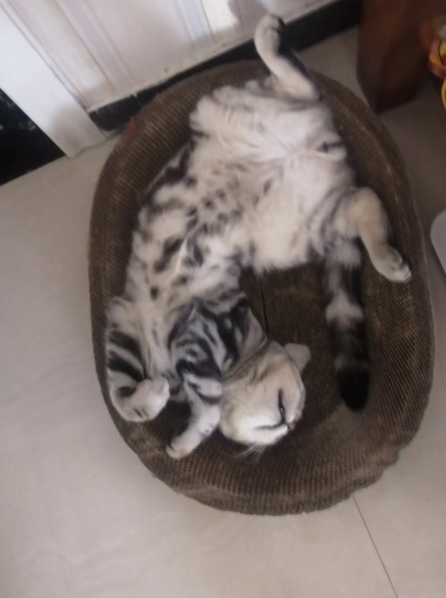
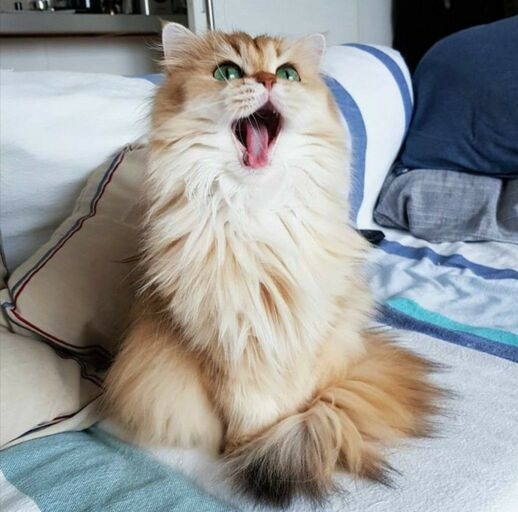
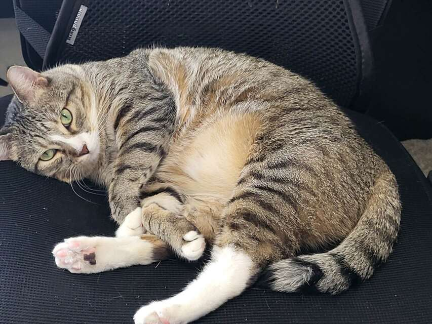

Brul

Brul is a two year old Maine Coon cat. She prefers to spend her days lying in the bed. She enjoys watching outside from the window as long as there are no loud noises and bugs outside.
Brul loves walks on the beach and taking sun naps on a warm summer day. Brul is a playful cat but enjoys having slow, relaxed days at the same time. She hates grooming and bathing.
Likes
- Eating
- Sleeping
- Scratches
Hua Hua

Hua Hua is a three-year-old kitten with gray and black hair. She is a very fond cat, often comes to my desk to play with me when I do my homework, and often likes to rub my side when I watch TV or play on my mobile phone. At the same time, she is also very warm, every time when guests come to our home to play, she will get along well with the guests.
Unlike other cats who are very afraid of getting out of the house, Hua Hua is very interested in exploring the outside world. Every time when my parents are preparing for a walk at the door, she will come and continue spinning, expressing her wish to go out with my parents.
Likes
- Chicken Breast
- Salmon
- Beef
Maple

Maple is a 2 year old tabby cat with brown stripes. She is very playful and friendly but also loves lounging in the sun! Maple is a huge fan of treats - she has even learned how to open doors to steal some extra treats.
Sometimes Maple has boundless energy. At night, she gets the zoomies after eating her final meal of the day. It usually takes her another hour to settle down before she can take a long nap.
Likes
- Belly rubs
- Treats
- Stretching her paws
Smoothie

Smoothie has been dubbed the "world's most photogenic cat", and her emerald eyes and golden fur have even inspired a mural in New Zealand. Smoothie has an aptly-named brother Milkshake, and the two are often featured together across social media platforms.
She became an internet sensation with 2.3 million followers on her smoothiethecat Instagram account.
Likes
Sprout

Sprout, a shy and elusive kitten when he first arrived at four months old, gradually became an affectionate companion. He enjoyed sleeping on my bed, but his early morning wake-up calls at 6:30 AM were a daily routine.
During my challenging academic phase, Sprout became my constant companion during late-night drawing sessions, quietly curling up on my lap, providing comfort and banishing solitude.
Likes
- Egg
- Playing with Naer and my tennis string
- Sleeping in the sunshine